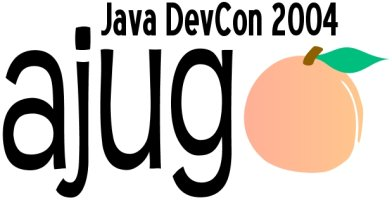

The Atlanta Java Users Group conference for professional software developers.
| Date: | Tuesday, May 18, 2004 |
| Time: | 8AM to 6PM |
| Location: | Cobb Galleria, Marietta, GA |
| Cost: | $50/person (includes breakfast and lunch!) |
Registration closed.
When registering, put the name of the person who is attending in the Payment For box.
Discover how industry experts identify optimal solutions, learn how to leverage the newest Java specifications and related technologies, and review case studies from other development groups across Atlanta.
Andy Hunt
An internationally recognized expert in the field software development methodologies and best practices, Hunt is the author of The Pragmatic Programmer, Programming Ruby, and The Agile Manifesto. Hunt is also a JOLT Productivity Award Winner for both Pragmatic Version Control and Pragmatic Unit Testing. Amongst his many honors, he is a columnist for IEEE Software Magazine and is Board of Directors for Agile Alliance.
Neal Ford
Neal is the chief technology officer at the DSW Group, Ltd. He is an architect, designer, and developer of applications, instructional materials, magazine articles, and video presentations and the author of Developing with Delphi: Object-Oriented Techniques and JBuilder 3 Unleashed. He has written Art of Java Web Development published by Manning and available at Amazon.com
Richard Manning
Richard is a Senior Software Architect and Lead Architect for Collaborative Systems in Sun Microsystems' Advanced Technology & Edge Computing Group (ATEC) where he specializes in service-oriented, peer-to-peer(p2p), dynamic/autonomic and wireless/mobility systems specification, architecture, design and development. With over six years at Sun Microsystems, nineteen years in the software industry and over fourteen years developing object-oriented systems, Richard has extensive experience designing and building systems in many domains including wireless/telecommunications, military, automotive, insurance, financial, entertainment, legal and retail industries. At present, his main focus area is autonomic computing using Java technology and N1. Key Java technology focus areas include JXTA, JMX, Java Web Services and Groovy.
Charlie Hubbard
Charlie is a software engineer with Internet Security Systems in Atlanta, GA. His work with database persistence has been featured at AJUG although his job requires that he concentrates on building distributed Swing applications that run his company's security sensors. He is a graduate of the Georgia Institute of Technology, and author of the open source project Pygmy - a tiny embeddable Java web server. He is also a contributor to Apache's Ant project.
Rob Kischuk
Rob is a Lead J2EE Developer for S.P. Richards, designing and developing their modernized merchandising and order management systems which handle over $1.5 billion in annual sales. During his 7 years of Java experience, he has developed in-depth knowledge of wireless applications, business process management, logistics systems, and web applications. Currently, his main areas of focus are Java persistence approaches and simplifying development of robust web applications. A graduate of Georgia Tech, he currently lives on the west side of Atlanta with his wife Cheryl.
More speaker details to come...
MVC Web Framework Shootout - Neal Ford
Choosing the proper web framework for your next development project can be very mind-numbing and time-consuming. The default answer is often go with Struts or simply roll-your-own. This session will describe the best practices and design patterns associated with web application architecture and demonstrate the creation of the same application in several of the most popular frameworks, such as Struts, WebWork, Tapestry, and Cocoon.
Exploring Good Swing Design with JGoodies' Form Layout - Charlie Hubbard
In user interfaces good design means good layout. One of the trickiest things to master in Swing is effective use of the LayoutManagers. Sometimes even the simplest of designs are hard to accomplish with Swing's default LayoutManagers. This presentation will explore what constitutes good layout, and demonstrates the features of JGoodies' free Form library that make good designs effortless. This presentation will arm beginners and advanced developers with the information needed to build first class Java GUI s.
"Leveraging J2EE Security" - Rob Kischuk
The robust security model of J2EE, is one of the industry's best-kept secrets. It allows developers to quickly and easily manage user authentication and authorization through flexible, comprehesive APIs. Learn how JSP, servlets, EJBs, and popular frameworks such as Struts are designed to take advantage of this security model, and how you can further customize the security to meet the needs of your applications. Leave your custom authentication modules and servlet filters at the door, and find out just how easy it can be.
JXTA - Java�s P2P protocol for collaborative applications - Richard Manning
Other Topics: Ant, Designing Large Web Applications and much more!
AJUG�s sponsors, Anteo Group, Inflow, BEA, Spectrum SCM, Compuware, JBoss and ClearNova, will be available as exhibitors. Plus, meal times create an ideal environment to meet other Atlanta-based software developers. Sometimes it is not what you know but who you know.
© 2004 Atlanta Java Users Group (AJUG)